Home > User Research Projects >
Methods Used:
Cognitive Task Analysis
Concept Mapping
CDM
Deepening Probes
Unstructured Interviews
Thematic Analysis
Tools Used:
Cmap Tools
According to a 2013 WHO report, a large percentage of pedestrian fatalities across the world occur at night. In the US, 72% of all pedestrian fatalities in 2013 occured in the dark (NHTSA, 2015). Various safety precautions can be taken to improve night pedestrian safety (e.g. wearing reflective clothing, carrying a personal alarm, etc...) yet these precautionary measures are not always adopted. Pedestrians follow a naturalistic decision making process which can be studied using cognitive engineering methods. Understanding pedestrian behaviour from a user-centered, cognitive angle can help to find more persuasive ways to promote night walking safety.
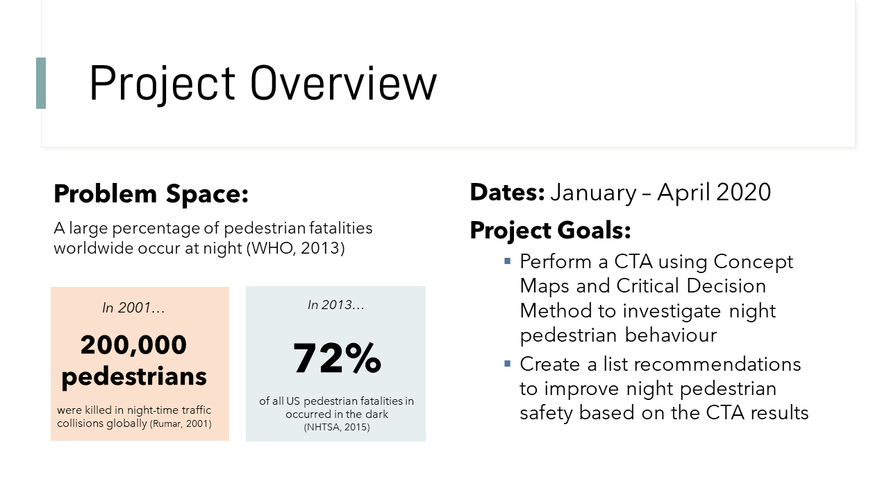 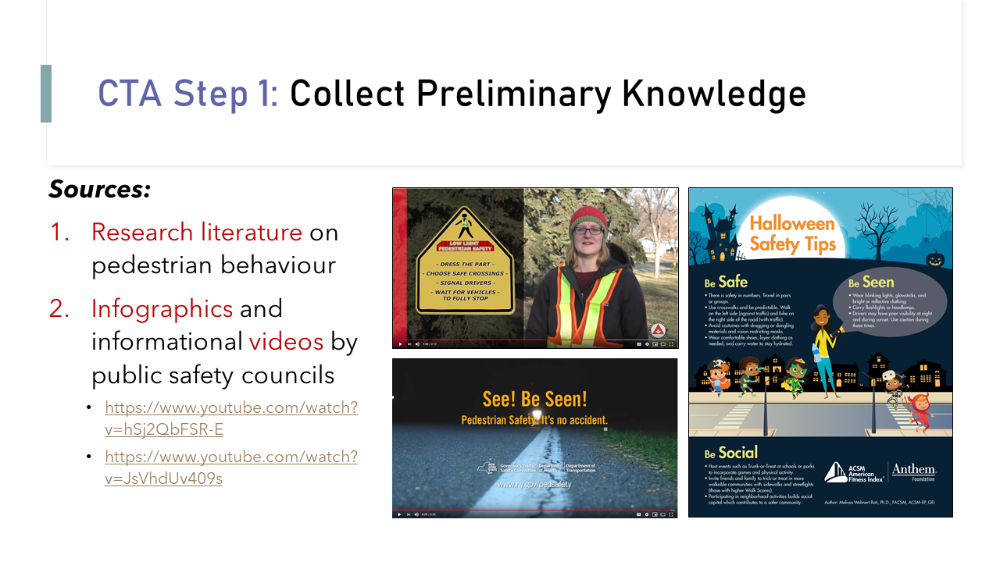 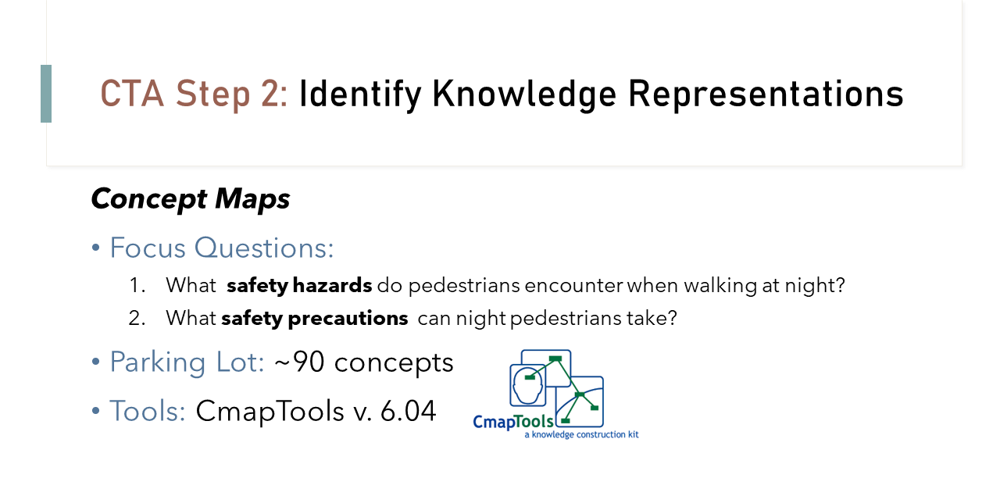 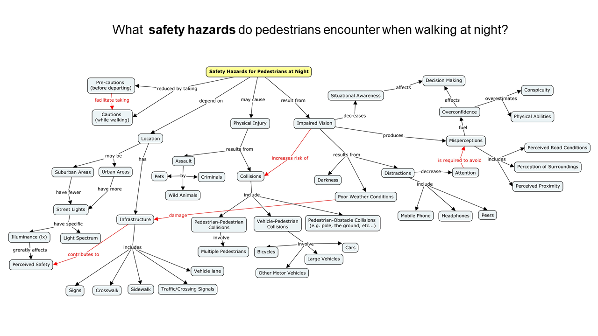 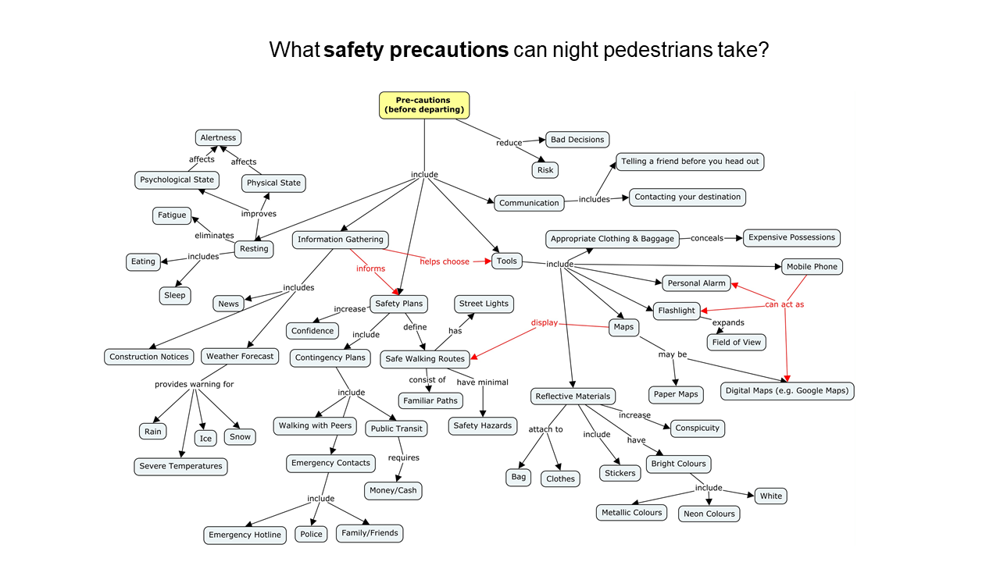
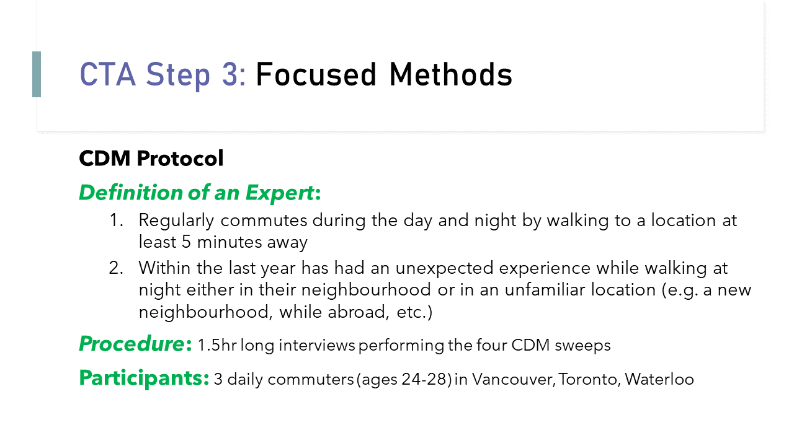 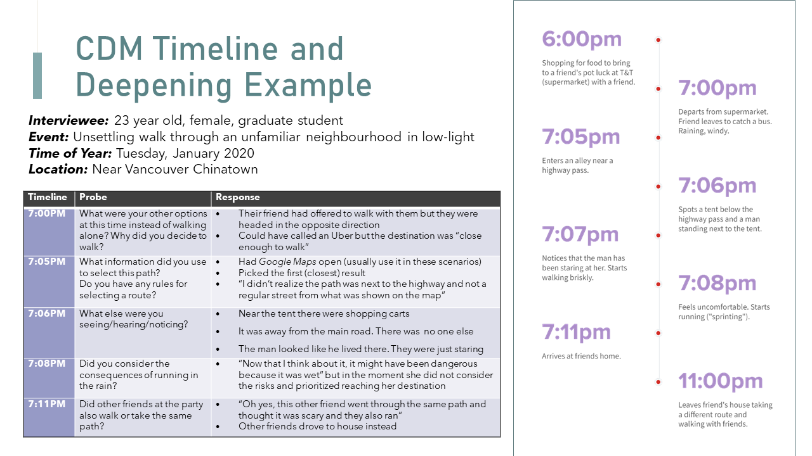 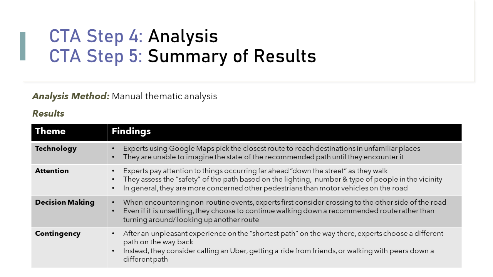 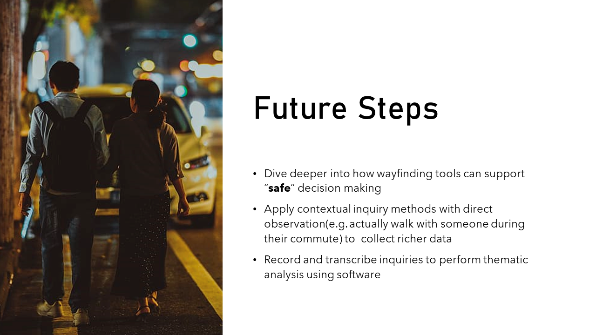
Images used:
Project Overview
Dates: January - April 2020
Description:
This cognitive engineering course project presents the results of a cognitive task analysis (CTA) performed with pedestrian experts to understand how pedestrians make decisions at night and make actionable recommendations to improve night safety. Project deliverables included creating concept maps to illustrate concepts related to pedestrian safety and hazards,recruiting and executing ~1 hour interview sessions with expert pedestrians, creating CDM timelines, and synthesizing results to generate recommendations presented in a final video presentation.
Description:
This cognitive engineering course project presents the results of a cognitive task analysis (CTA) performed with pedestrian experts to understand how pedestrians make decisions at night and make actionable recommendations to improve night safety. Project deliverables included creating concept maps to illustrate concepts related to pedestrian safety and hazards,recruiting and executing ~1 hour interview sessions with expert pedestrians, creating CDM timelines, and synthesizing results to generate recommendations presented in a final video presentation.
Methods Used:
Tools Used:
Problem Space
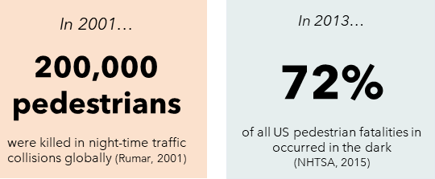According to a 2013 WHO report, a large percentage of pedestrian fatalities across the world occur at night. In the US, 72% of all pedestrian fatalities in 2013 occured in the dark (NHTSA, 2015). Various safety precautions can be taken to improve night pedestrian safety (e.g. wearing reflective clothing, carrying a personal alarm, etc...) yet these precautionary measures are not always adopted. Pedestrians follow a naturalistic decision making process which can be studied using cognitive engineering methods. Understanding pedestrian behaviour from a user-centered, cognitive angle can help to find more persuasive ways to promote night walking safety.
Main Outcomes
- Navigation applications such as Google Maps should develop a method to recommend routes based on the perceived level of safety rather than proximity, and develop tools to help users better imagine the state of the recommended path (e.g. whether it is far from a main road, well-lit, etc...)
- Pedestrians assess safety based on lighting and the number or nature of the people in the surroundings.When they think about pedestrian safety, they are more concerned about motor vehicles than other pedestrians.
- Once pedestrians have commited to a chosen path, they are unlikely to turn around even if the chosen path is unsettling or "sketchy" and therefore interventive measures must be taken before or at the moment of choosing the path
- Common alternatives to walking alone that pedestrians consider are walking with friends, calling an Uber or getting a ride from an acquaintance. They are more likely to choose these methods if they have recently had an unpleasant experience while walking alone.
Work Samples
e.g. CTA procedure, Concept Maps, CDM Timelines, etc...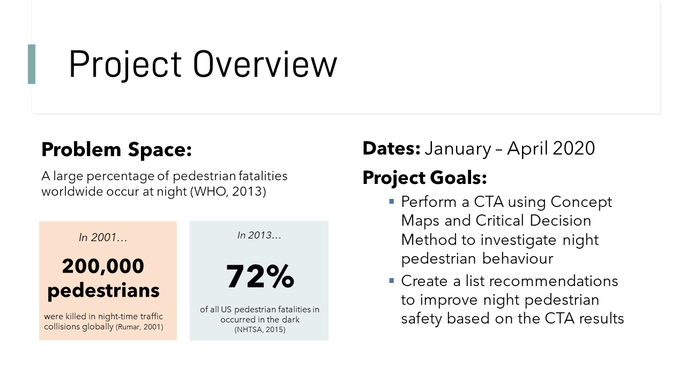 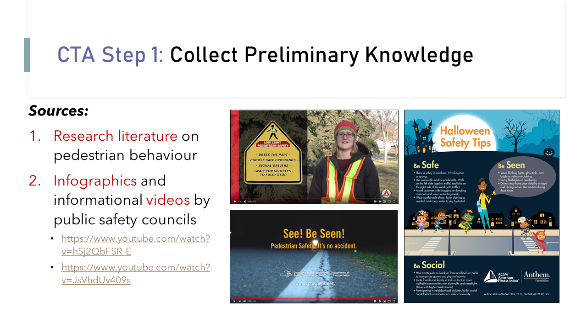 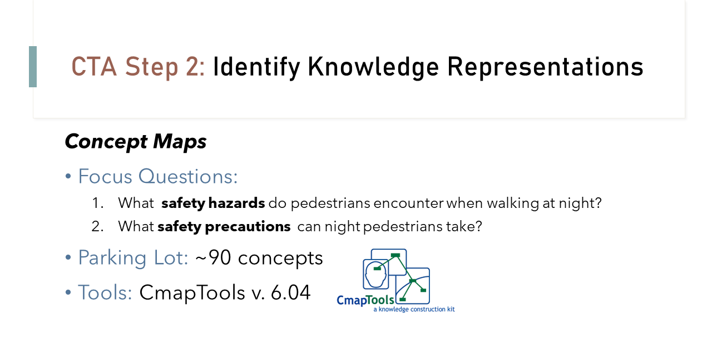 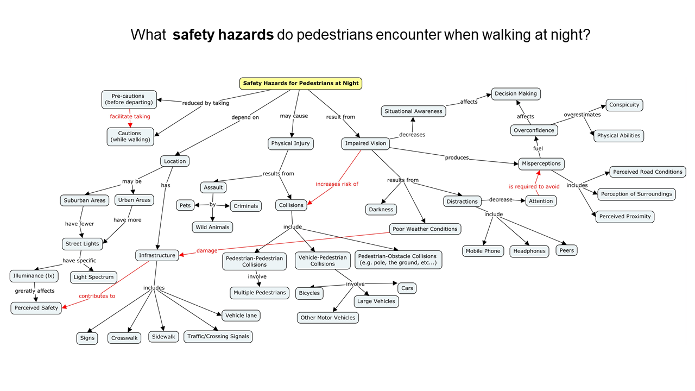 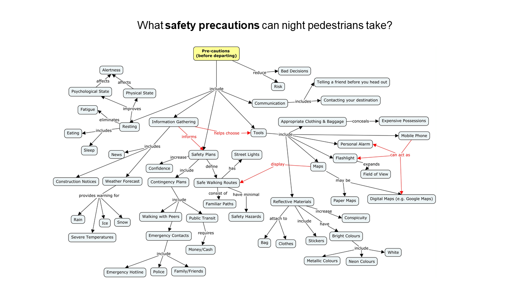
{kind=link}
{kind=link}
{kind=link}
{kind=link}
{kind=link}
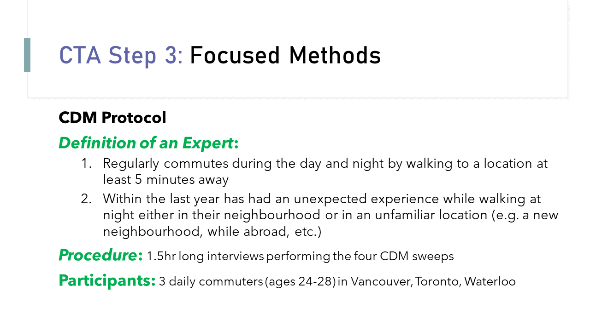 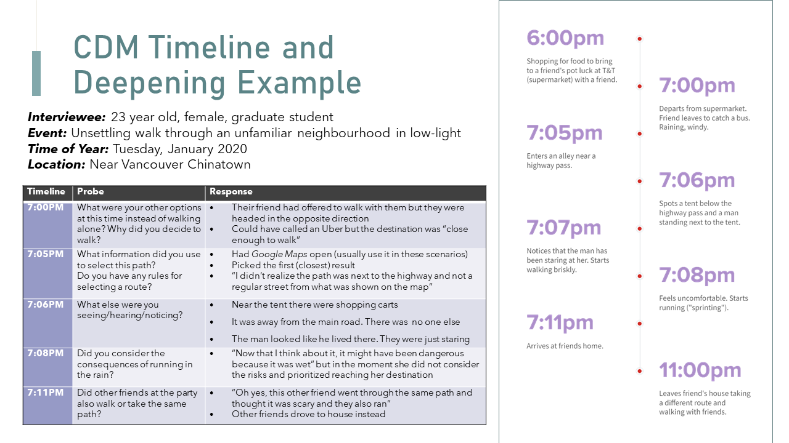 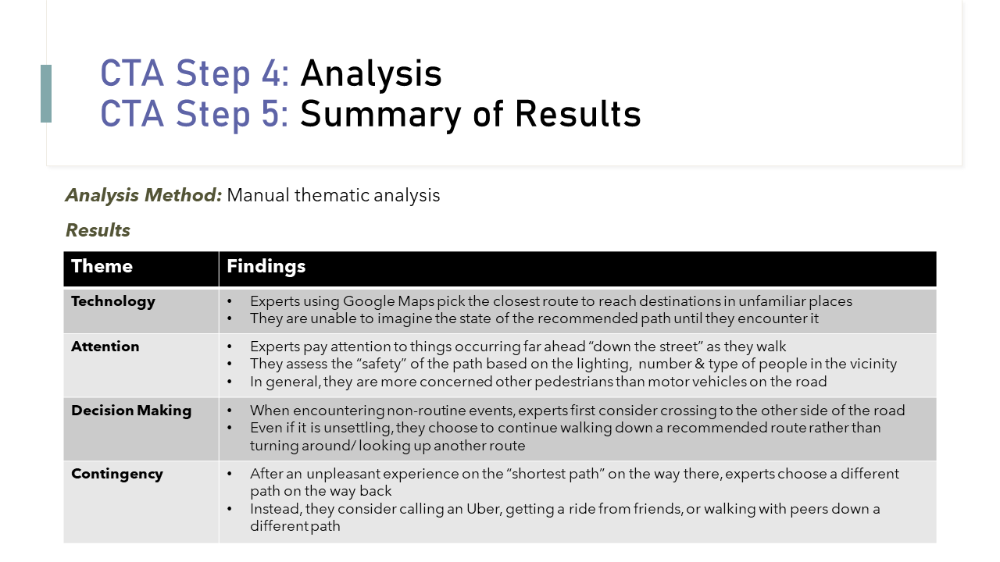 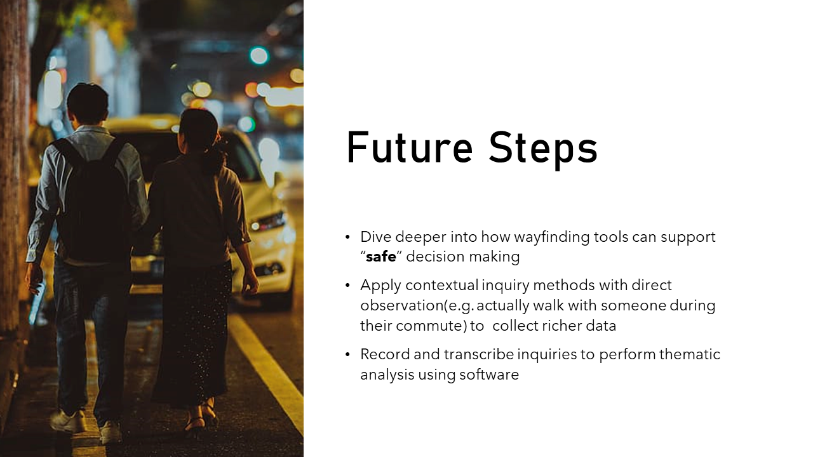
{kind=link}
{kind=link}
{kind=link}
{kind=link}
Images used:
https://media2.govtech.com/images/940*630/GT1219_YIR_StreetLights.jpg
https://images.glaciermedia.ca/polopoly_fs/1.23087789.1510162745!/fileImage/httpImage/image.jpg_gen/derivatives/landscape_804/be-bright.jpg
https://mobsea.com/appimages/Cutting-Edge-Technologies-Soon-to-be-Used-in-Cars/8.jpg
https://americanfitnessindex.org/wp-content/uploads/2019/10/Halloween-pedestrian-safety-tips-infographic.jpg
https://p0.piqsels.com/preview/710/38/410/couple-near-car-during-night-time.jpg